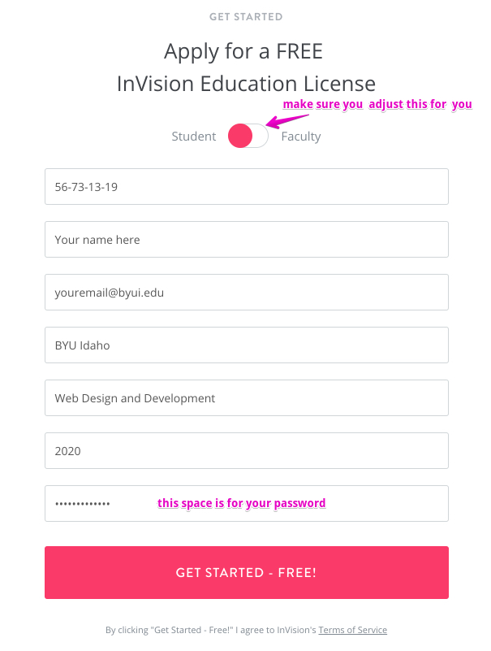

Week 01: Setup Software Used In Course
Activity Instructions
Estimated Time: 15 minutes
One of our goals for this class is to allow you to create a real website accessible with a browser. This, as you will discover in the readings and videos for this week, requires you to have what is known as a host. Most hosts cost money, but not all. For this class, we will be using a free service called Glitch.com . Using this service allows you to create your website with their text editor, save the website, upload the images for the website, and even share the website with an instructor or fellow student for collaboration.
There are a few steps we will need to go through to get everything set up so you are ready to begin..
Watch the video below:
Step 01: Glitch Login
Visit the Glitch website and click on the Sign in button in the top right corner of the screen. Glitch lets you sign in using either facebook or GitHub (I like GitHub and use that one)... both are free to use. (If you choose to use GitHub, you would need to have a github account). Click on the Sign in button for the account you would like to use. You may see a screen requesting permission for Glitch to access the account you have chosen to use.
Step 02: 'Remix' the Starter project
Next we need to create a project for you to use this semester. Glitch makes use of a concept called a 'Remix'. This is essentially taking an existing Glitch project and making a copy of it that you can use and edit. I have prepared a project for this class that you should 'Remix'. Visit this Starter Project AFTER logging into Glitch and then tap the ' Remix This' button in the top right corner of the window. This will create a personal copy of it for you.
Step 03: Become familiar with the interface
After creating a project you should see something similar to the following:

-
- This is the random name that Glitch chose for your project. You can change this by clicking on the name.
- This is the list of files in the project. Notice in the image that
index.htmlis selected and open in the editor. Ifindex.htmlis not open in your screen tap on it to open it.
- This is the code editor. It is where we will spend most of our time writing HTML and CSS
- This is where you will click to preview your page. It will open a new tab where you can see the results of the code you write.
- This is where you can add a new file to your project.
Before you proceed, email your instructor your share collaborate link so that you can be helped
real time throughout the course. Only do this once, or if your instructor asks you to send again. Even though you email the instructor your share/collaborate link in week 1, you must upload the share collaborate link each week to ilearn, not the instructor. Follow the directions in the box to the right:
Press the share button and choose the 3rd choice in the list:
There are a few steps we will need to go through to get everything set up so you are ready to begin..
Step 4: Review the index.html file
Below is the HTML code that is currently in the index.html file.
<!DOCTYPE html>
<html>
<head>
<title>WDD 100</title>
<meta charset="utf-8">
<meta name="viewport" content="width=device-width, initial-scale=1">
<link rel="stylesheet" href="/styles.css">
</head>
<body>
<header>
<!-- logo will go here -->
<nav>
<ul>
<li><a href="index.html">Home</a></li>
<li><a href="aboutme.html">About Me</a></li>
</ul>
</nav>
<!-- wide banner image will go here -->
</header>
</body>
</html> It's ok if this doesn't make sense yet. We will eventually learn about what each line in this code does. For now let's take a look at the page this code created. Click on the "Show" button. You should see a very basic page with only two links.
Step 5: Glitch settings that can change

Let's make one more change to the Glitch settings. In the top right corner of the screen there are two icons. The far right one lets you see some information about Glitch...it mine looks like a fish. The other is for some User options. Click on that one. You should see something similar to the image below.
You can also change Glitch to use a dark theme instead of the light one from that menu as well if you prefer that.
Leave auto-refresh on (this will allow glitch to update changes for you automatically so you won't have to refresh your screen all the time)
Leave the Wrap Text on as well. This will allow text to wrap at the end of lines as you are typing the way they need to.
Other Software
Here is a list of other software we will use this semester. These are all web based and require no installation. Some would require account creation. Your instructor will give you more details when it is time to use them:
- Khan Academy We will be using Khan Academy as a tutorial for html and css in the course instead of purchasing a text. Although not required to register with Khan Academy, you are welcome to do so that your progress will be recorded with them.
- Moqup.com A great wireframe creation choice. They also have a free educational account available.
*Important* Obtain Free Moqups upgrade by:
Do this now so that when week 5 comes around, your moqups account will be ready to go.....
Sign-up here: You MUST use your byui.edu email address: http://www.invisionap
Code: 56-73-13-19
It's that simple! These instructions are for new accounts. If a student already has an account, just have them email me with their expected graduation date. I will make sure they get their upgrade.
Doing this will allow UNLIMITED Prototypes in your account, rather than just 3. This will help you to more easily complete your course work. Do this now so your account will be ready for an activity later in the course.
This image shows more detailed instructions: 
- coolors.co A color theme chooser we will use for your site plan activity
Step 6: Upload URL
Now, Upload your Share/Collaborate URL to complete this assignment and then go to the Getting to Know You assignment.